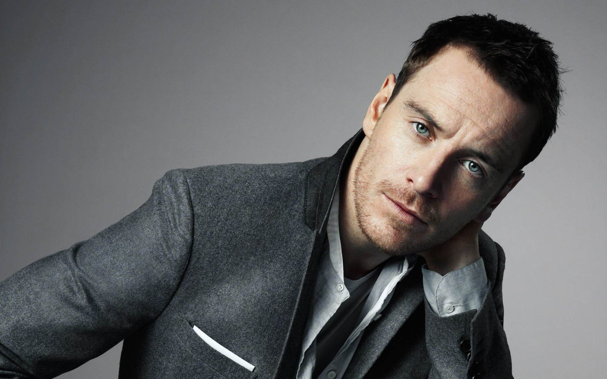

Ирландия подарила нам огромное количество личностей, которые серьезно повлияли на культуру в целом. Посудите сами: музыка – Боно, юмор – Дилан Моран, ну а кинематограф? Давайте попробуем отобрать пять самых известных ирландских актеров. Уверен, что вы даже не подозреваете, что многие из них ирландцы. Открывает наш список Лиам Нисон. В школьные годы увлекался боксом, однажды даже сломал нос. Но, несмотря на это, он всё же добился определённых успехов — выиграл в своей весовой категории юношеский чемпионат по боксу среди любителей. Звезда «Заложницы» и «Списка Шиндлера» чаще всего играет наставников или отцов главных героев. Иногда просыпается по утрам и думает: «Что я делаю в кино? Хочу вернуться в Дублин и работать на электропогрузчике». Пирс Броснан родился в Дрогеда в 56 километрах от Дублина и получил звезду на аллее славы в Голливуде за вклад в развитие киноиндустрии. Её номер — 7083. Пирс, один из Бондов (Джеймсов Бондов), сейчас имеет двойное гражданство. Любит сцены секса в кино, но считает, что у Бонда они слишком скучные. Утверждает, что его первым увиденным фильмом был «Голдфингер» 1964 года. Броснан один из немногих ирландцев, кто получил звание Офицера (OBE) Ордена Британской Империи. Самый настоящий ирландец Колин Фаррелл в возрасте семнадцати лет был изгнан из школы за драку с преподавателем, который застал Фаррелла спящим на уроке, и вместо извинений, был избит. После этого инцидента он на год уехал с друзьями в Австралию. Проходил пробы для участия в ирландском бойс-бенде «Boyzone», но ему отказали. Завсегдатай ирландских криминальных комедий, как например "Семь психопатов", известный по крупным голливудским проектам («Александр»). Обладатель самых кустистых в Голливуде бровей говорит: «Быть ирландцем — очень большая и важная часть меня. Я никогда с ней не расстаюсь». Кустистые брови Колина Фаррелла не подвергаются сомнению, как и самые красивые глаза Киллиана Мерфи. Играл в фильмах «Начало» и «Темный рыцарь: Возрождение легенды». Восхищается Лиамом Нисоном, дружит к Колином Фарреллом и не ест мяса. Самое важно в жизни — его семья и друзья, которые остались в Ирландии. Часто отмечается критиками за «хамелеонские» роли. Согласно семейному древу Фассбендера, мать актёра — прапраплемянница ирландского революционера Майкла Коллинза. Майкл Фа́ссбендер ирландский актёр театра, кино и телевидения, продюсер немецкого происхождения наиболее известен своим сотрудничеством с режиссёром Стивом Маккуином, у которого он снялся в таких фильмах, как «Голод», «Стыд» и «12 лет рабства», также широко известен ролью Магнето в фильмах «Люди Икс», двукратный номинант на премию «Оскар», трёхкратный номинант на премию «Золотой глобус», четырёхкратный номинант на премию BAFTA. В том числе и в 2016 году за роль Стива Джобса. Майкл говорит, что его немецкая половина стремится все держать под контролем, но ирландская все равно постоянно сеет хаос.  Кстати, о хаосе. Основатели хаос-нойзинга гитарно-синтезаторная «стена звука» и мелодика на основе нойз-попа группа My Bloody Valentine тоже родом из Ирландии. Если вы чувствуете себя Майклом Фассбендером в музыке, то можете примерять на себя роль настоящего ирландского музыканта. Запиши кавер на песню любого ирландского исполнителя, сними ее на видео, выложи на Ютьюб, а ссылку отправь на irishtrue.vgorode.ua и сыграй на своем первом европейском сольном концерте в Дублине.
конкурс